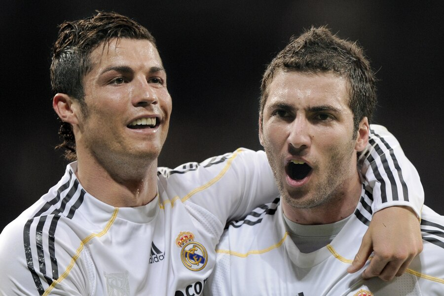

Snatching the Breakaway — Blocked Higuaín's Open Goal
The open-goal block on Higuaín: During the Real Madrid years Higuaín once sprang the offside trap, rounded the keeper and faced an open goal, an easy tap-in. Yet Ronaldo barged into the box from a rear angle to try to finish it himself, the two collided and the ball went begging. The moment was edited into a widely circulated video 'Cristiano Ronaldo selfishness costs Higuain a goal' — better neither score than let a teammate score.
The 'penalty/free-kick grabbing' tradition: Far from isolated. Ronaldo was famed at Madrid and Juve for 'grabbing penalty duties': penalties that should have gone to in-form teammates he often insisted on taking; free-kicks were almost exclusively his, even as his conversion rate fell off a cliff. Higuaín, Benzema and Dybala all fell victim to this 'ball-hogging'.
Higuaín's public blast: After leaving Real for Napoli, Higuaín publicly criticised Ronaldo in an interview with Spain's Don Balon magazine: 'He's too full of himself. If you don't praise him as the best, he's not your friend. Cristiano thinks he's the best, but he's overrated.' He then drew a direct comparison with Messi: 'I shared a dressing room with Messi — the two are completely different.'
Napoli's 'denial': After the remarks caused a stir, Higuaín's then club Napoli rushed out a statement 'denying that Higuaín had given the interview', calling 'the relevant quotes fabricated and groundless'. But multiple outlets (Bleacher Report, Mirror, Sport) had already widely reproduced them, and Higuaín himself never explicitly refuted the substance — plenty of room between 'denying the interview' and 'denying having said it'.
A spark for leaving Real: Higuaín joined Napoli in 2013 for €37 million; the consensus is that his ball-rights feud with Ronaldo, and the oppressive feeling of being forced to play second fiddle, were major reasons for the move. He himself has hinted in various settings that Madrid's tactics 'were all about Ronaldo' and that the striker partners were merely supporting cast.
Squeezed again at Juve: Cruelly, in 2018 Ronaldo moved to Juventus — where Higuaín was the striker. The moment Ronaldo arrived, Higuaín was loaned out (to AC Milan, then Chelsea) and lost his place entirely. In a Juve-Milan match Higuaín completely melted down: cursing the referee, squaring up to Ronaldo, bellowing at Chiellini, and finally getting sent off — years of pent-up resentment erupting at the reunion with the 'old teammate'.
Benzema's 'self-sacrifice' contrast: Benzema, who also played with Ronaldo, took the opposite path — actively becoming the 'supporting leaf', holding up the play, providing the link, ceding the finishing to Ronaldo. Benzema publicly defended Ronaldo multiple times as 'not selfish', but that itself inversely proves: the price of coexisting with Ronaldo is you have to sacrifice yourself — otherwise you get the Higuaín treatment.
Verdict: Blocking a teammate's goal-bound effort to try scoring yourself is the perfect picture of Cristiano's selfishness. The Higuaín incident captured the «me ahead of the team» that defines the Portuguese.